Building Questions: 1. Is your building a healthcare facility where patients stay overnight or does your building house or treat people who have chronic and acute medical problems or weakened immune systems? Yes No please select one of the field. 2. Does your building primarily house people older than 65 years (like a retirement home or assisted-living facility)? Yes No please select one of the field. 3. Does your building have multiple housing units and a centralized hot water system (like a hotel or high-rise apartment complex)? Yes No please select one of the field. 4. Does your building have more than 10 stories (including basement levels)? Yes No please select one of the field. Device Questions: 5. Does your building have a cooling tower? Yes No Don't know please select one of the field. 6. Does your building have a hot tub (also known as a spa) that is not drained between each use? Yes No please select one of the field. 7. Does your building have a decorative fountain? Yes No please select one of the field. 8. Does your building have a centrally-installed mister, atomizer, air washer, or humidifier? Yes No please select one of the field. 9. Does your building have dead ends? Yes No please select one of the field. 10. Does your building have thermostatic mixing valves? Yes No please select one of the field. 11. Does your building have low flow fixtures? (As per EPA, guidlines for low flow fixtures are: Shower heads- 2.0 gpm, Faucets- 1.5 gpm, Toilet- 1.28 gpf) Yes No please select one of the field. Other Questions: 12. Does your building have Electronic faucets? Yes No please select one of the field. 13. Does your building have Showers with flexible hoses? Yes No please select one of the field. Water Temperature Questions: 14. How long does it take in seconds for the water to get warm after a tap is opened? Please enter your answer here: 15. What hot water temperature setpoint (in ℃) do you use for the domestic hot water system (at sinks/taps and showers)? ≥ 50℃ ≥ 43℃ and ≤ 50℃ ≤ 43℃ please select one of the field. 16. What is the measured disinfectant residual level (mg/L) in your plumbing system? < 0.2 mg/L ≥ 0.2 mg/L and < 1 mg/L ≥ 1 mg/L and < 3 mg/L > 3 mg/L please select one of the field. Submit Reset Based on your input, we have identified the following features for which your building needs a water management program: - hot and cold water distribution system - cooling tower - hot tub - decorative fountain - centrally-installed mister, atomizer, air washer, or humidifier - thermostatic mixing valves - low flow fixtures - dead ends - electronic faucets - showers with flexible hoses For more information on the water distrubtion system please refer to the below document: hot and cold water distribution system For more information on the features required for your building, please refer to the below documents: cooling tower 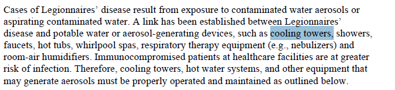 hot tub 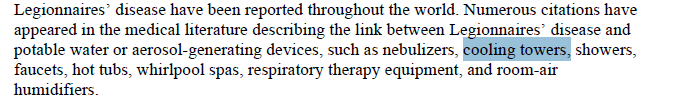 decorative fountain 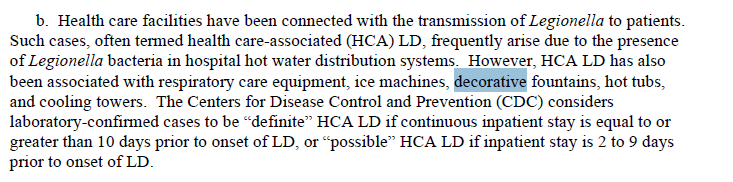 centrally-installed mister, atomizer, air washer, or humidifier 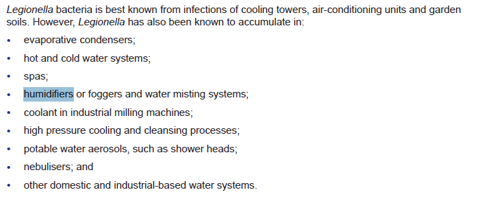 thermostatic mixing valves 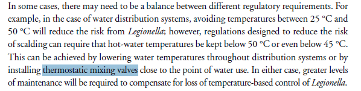 low flow fixtures 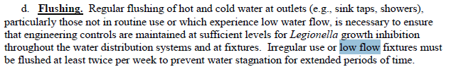 dead ends 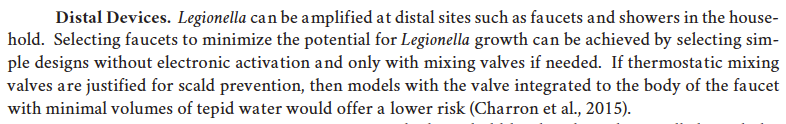 electronic faucets 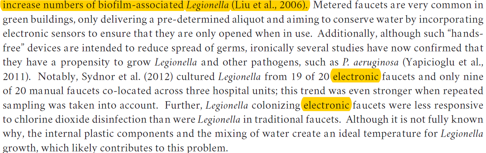 showers with flexible hoses 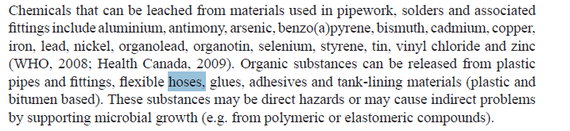 Results for Water Temperature: {{results}} 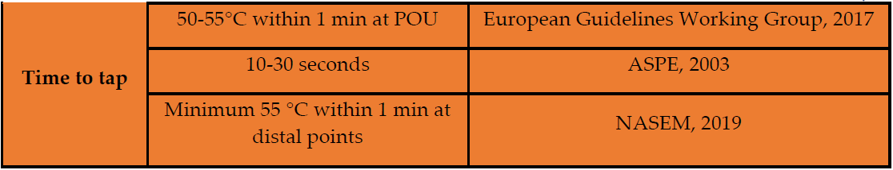 {{setpointResults}} 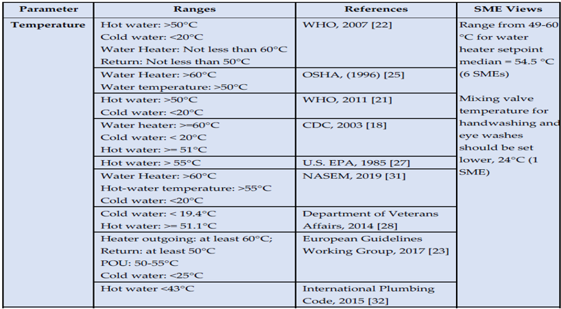 {{residualResults}} 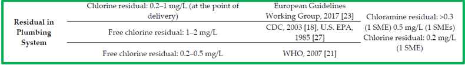 Download PDF